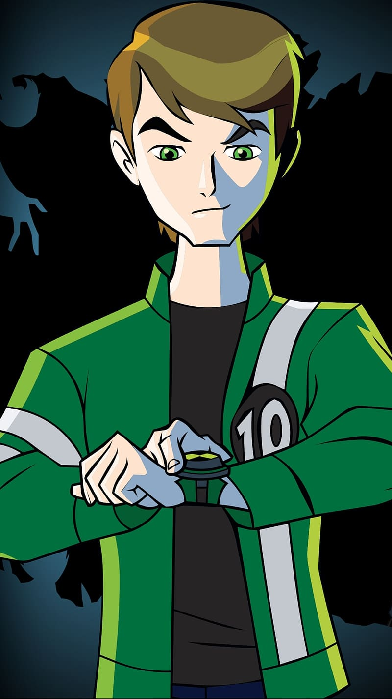

About Me
Benjamin Chaambwa is my name. I am an upcoming male Computer Scientist, currently in his third year of study at The Copperbelt University. I reside in a small town called Kalomo located on the Southern Province of the country Zambia.
My passion in the world of tech revolves around CyberSecurity, Networking, System Architecture and exploring the lower level inner workings of computer systems. I am a Linux geek and have grown to love working in the terminal over the past four years. Away from tech, I'm just a regular human being who enjoys the simple things in life, eager to learn new things and always curious.
A few of my hobbies include
- Lower Level Programming.
- Poetry.
- Craftsmanship.
- Exploring Nature and Travelling.
- Breaking and Building things.
My top three academic courses of interest this year are:
- CS320: Data Communication and Networking
- CS345: Compiler Construction and The Theory Of Automata
- CS351: Numerical Analysis
